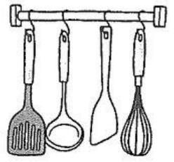

1 リーさんの 前に いる ひとが たなかさんです。
もんだい1 ____の ことばは ひらがなで どう かきますか。 1・2・3・4から いちばん いい ものを ひとつ えらんで ください。
（れい）しゃしんは かばんの 下に ありました。
（かいとうようし）
| （れい） | ① | ② | ③ | ● |
|---|
2 はやしさんも 飲んで ください。
3 いま 店の ちかくに います。
4 天気が いいですね。
5 さとうさんは とうきょうで 生まれました。
6 これが いちばん 古いです。
7 四月に けっこんしました。
もんだい2 ____の ことばは どう かきますか。1・2・3・4から いちばん いい ものを ひとつ えらんで ください。
（れい）これは なんの パーティーですか。
（かいとうようし）
| （れい） | ① | ● | ③ | ④ |
|---|
8 はなの しゃしんを もらいました。
9 けさは しんぶんを よみませんでした。
10 いま きたぐちに います。
11 もう いちど たって ください。
12 それは ろくせんえんです。
もんだい3 （ ）に なにが はいりますか。1・2・3・4から いちばん いい ものを ひとつ えらんで ください。
（れい）きのう（ ）へ いきました。
（かいとうようし）
| （れい） | ① | ② | ● | ④ |
|---|
13 あかちゃんが ねて いますから、ちいさな（ ）で はなして ください。
14 これは ははの（ ）とけいです。
15 この りょうりは、バターを 20（ ）つかいます。
16 さいふを わすれましたから、かいものの とき、（ ）。
17 びょういんは、この みちを（ ）いって ください。
18 そこに ざっしが 2（ ）あります。
もんだい4 ____の ぶんと だいたい おなじ いみの ぶんが あります。1・2・3・4から いちばん いい ものを ひとつ えらんで ください。
（れい）ゆうべ しゅくだいを しました。
（かいとうようし）
| （れい） | ① | ② | ③ | ● |
|---|
19 くだものは どこに ありますか。
20 この こうえんは ひろいですね。
21 わたしは まいあさ さんぽして います。
もんだい1 （ ）に 何を 入れますか。1・2・3・4から いちばん いい ものを 一つ えらんで ください。
（れい）これ（ ）えんぴつです。
（かいとうようし）
| （れい） | ① | ② | ● | ④ |
|---|
1 毎日 私は 1時間（ ）さんぽします。
2 この 電車は 10時に 花川駅（ ）着きます。
3 みかんや りんご（ ）の くだものが 好きです。
4 私の 兄は 大学生（ ）、京都に 住んで います。
5
中田
「山川さん、あした 私と 林さんは プールに 行きます。山川さん（ ）行きませんか。」
山川
「はい。行きたいです。」
6
A
「この 本を 読みましたか。」
B
「いいえ、（ ）です。」
7
（デパートで）
田中
「その ぼうしは いくらですか。」
店の 人
「6,000円です。」
田中
「じゃあ、あの（ ）は いくらですか。」
8 私は 子どもの とき、ぎゅうにゅうが（ ）でした。
9
（会社で）
A
「暑いですね。」
B
「そうですね。エアコンを（ ）。」
A
「あ、おねがいします。ありがとうございます。」
もんだい2 ★に 入る ものは どれですか。1・2・3・4から いちばん いい ものを 一つ えらんで ください。
（もんだいれい）
A「_ _ ★ _ か。」
B「山田さんです。」
（こたえかた）
1. ただしい 文を つくります。
| A「 | _ | _ | ★ | _ | か。」 |
| 3 あの 人 | 2 は | 4 だれ | 1 です | ||
| B「山田さんです。」 | |||||
2. ★に 入る ばんごうを くろく ぬります。
（かいとうようし）
| （れい） | ① | ② | ③ | ● |
|---|
10 そふの 家の にわ _ _ _ ★ あります。
11 私は まいばん りょうりを します。_ _ ★ _ カレーを 作りました。
12 弟は、私 _ _ ★ _ いつも かぶって います。
13 としょかんに かさを わすれた _ _ ★ _ 行きます。
もんだい3 14から17に 何を 入れますか。ぶんしょうの いみを かんがえて、
りゅうがくせいの グスマンさんと タンさんは さくぶんを 書いて、クラスの みんなの 前で 読みました。
（1）グスマンさんの さくぶん
先週の 土曜日は、朝 10時から 12時まで 日本人の ともだちと サッカーを しました。【14】、みんなで 昼ごはんを 食べました。昼ごはんを 食べながら、いろいろ 話して、たくさん わらいました。とても 【15】。
（2）タンさんの さくぶん
先週の 土曜日と 日曜日に 東京に 行きました。東京に 住んで いる ともだち 【16】 会いに 行きました。東京で 私たちは 買い物を したり、ゆうめいな たてものや はしを 見たり しました。来月は ともだちが 私の 家に 【17】。いっしょに いろいろな ところへ 出かけたいです。
14 【14】
15 【15】
16 【16】
17 【17】
もんだい4 つぎの（1）と（2）の ぶんしょうを 読んで、しつもんに こたえて ください。こたえは、
（1）
（日本語学校で）
学生が この 紙を 見ました。
― じてんしゃは いりませんか ―
じてんしゃを あげます。 2年前に 買った じてんしゃです。私の 家は 学校の 近くですから、とりに 来て ください。
ほしい 人は 電話を して ください。
18 ヤンさんは、どんな 人に「電話を して ください。」と 言って いますか。
（2）私の 町には 魚屋が 二つ あります。本屋の となりの 店は おいしい 魚が 多いですが、高いです。駅の 前の 店は 安いですが、あまり おいしく ありません。今日は おいしい 魚が 買いたいですから、（ ）。
19 （ ）の 中に 入る 文は どれですか。
もんだい5 つぎの ぶんしょうを 読んで、しつもんに こたえて ください。こたえは、
マルタさんは 先月まで レストラン「花」で はたらいて いました。これは、マルタさんが レストラン「花」の みなさんに 書いた 手紙です。
「花」のみなさんへ
こんにちは。
日本では さくらが さいて いますか。わたしが 国に 帰ってから もう 2週間です。
みなさん、2年間 ありがとうございました。わたしは 日本で とても 楽しかったです。みなさんと いっしょに はたらいて、いろいろな ことを べんきょうしました。
来月からは 国の パークホテルの レストランで はたらきます。そして、9月に けっこんします。けっこんパーティーは パークホテルで します。
それでは また 手紙を 書きますね。少し 遠いですが、わたしの 国へも あそびに 来て ください。
みなさん、ほんとうに ありがとうございました。
20 手紙を 書いた後、マルタさんは どうしますか。
21 この手紙で マルタさんは 何が いちばん 言いたいですか。
もんだい6 右の ページを 見て、下の しつもんに こたえて ください。こたえは、
22 ジスさんは、木曜日の 午後に りょうりを 習いたいです。やさいを 使った りょうりが いいです。どの クラスの 何日に 行きますか。
高田 りょうり きょうしつ
10月の クラス
秋の やさいを 使った りょうりや あまくて おいしい おかしを 作りませんか。

| ① | とり肉と 秋の やさいを 使った カレー | ||
|---|---|---|---|
| 4日（水）・12日（木） | 10時～12時 | 1,500円 | |
| ② | 秋の やさいを 使った スパゲティ | ||
| 5日（木）・21日（土） | 10時～12時 | 1,200円 | |
| ③ | こうちゃの クッキーと チョコレートの アイスクリーム | ||
| 13日（金）・19日（木） | 14時～16時 | 1,500円 | |
| ④ | 秋の やさいを 使った うどん | ||
| 16日（月）・26日（木） | 14時～16時 | 1,200円 | |
同じ クラスが 2回 あります。どちらか 1回 来て ください。
高田 りょうり きょうしつ
電話 05-1212-3439（月曜日～土曜日 9時～17時）